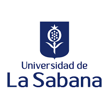
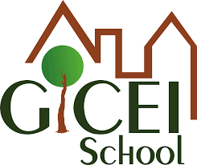

Tecnología e inteligencia artificial: Me interesa comprender el impacto y funcionamiento de las IA en la vida diaria y profesional.
Ciencia de datos: Planeo estudiar Ciencia de Datos en la Universidad de La Sabana para profundizar mi enfoque en inteligencia artificial.
Actividad física: Valoro el ejercicio como una herramienta para mantener el bienestar y la disciplina personal.
EDUCACIÓN
Grado en Ingeniería Informatica

Universidad De La Sabana
Jul 2024-May 2029
Acreedor Beca Talento Unisabana mantenida por méritos académicos durante todo el Pregrado de Ingeniería Informatica
Mención de Honor por destacable desempeño académico (periodo 2024-2)
Mención de Honor por destacable desempeño académico (periodo 2025-1)
Participante del PTB (Plan de Tutoría para Becarios) entre julio de 2024 y diciembre de 2028, reconocido por su compromiso en actos solidarios y participación activa en procesos de autoformación personal
EXPERIENCIA LABORAL
Voluntario en Soporte Técnico – Colegio campestre Gicei

Jul 2023 – Nov 2023
Brindé apoyo a docentes y estudiantes en el uso de herramientas digitales (Tinkercad, Bitbloq, plataformas educativas).
Mantuve equipos informáticos básicos y realicé diagnósticos de red.
Apoyé la instalación de software en computadores institucionales.
Participante – SabanaHack
Abr 2024
Integré un equipo multidisciplinario para crear una solución web sobre movilidad urbana.
Recibimos mención especial por innovación y trabajo en equipo.
Estudiante en semillero de programación – Universidad de La Sabana
Feb 2025 – Dic 2025
Participé en un grupo de investigación centrado en desarrollo de software y resolución de problemas computacionales.
Colaboré en el diseño de una aplicación web para gestión de horarios académicos.
Aprendí metodologías ágiles y prácticas básicas de trabajo en equipo en Tecnologías de la Información (TI).
HABILIDADES
Programación: Conocimientos básicos en desarrollo de aplicaciones web.
Resolución de problemas computacionales: Capacidad para analizar y proponer soluciones eficientes.
Trabajo en equipo: Experiencia colaborando en proyectos de software.
Gestión de proyectos: Contribución en el diseño de sistemas de organización académica.
Idiomas: Español nativo e ingles intermedio - IELTS B2